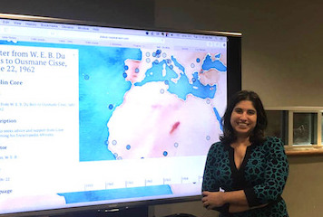

About
I am an Assistant Professor of English and the Faculty Fellow for Digital Library Initiatives at Salem State University, where I also serve as Coordinator of the Graduate Certificate in Digital Studies, Coordinator of the Combined B.A./M.Ed. in English Education, and Interim Coordinator of the M.A. in English. My research interests lie at the intersections of postcolonial and African diaspora studies, humanities knowledge infrastructures, digital humanities, and new media. My first monograph,
New Digital Worlds: Postcolonial Digital Humanities in Theory, Praxis, and Pedagogy,
was published by Northwestern University Press in 2018. I am co-editing two volumes: Intersectionality in Digital Humanities with Barbara Bordalejo for Arc Humanities Press and The Digital Black Atlantic with Kelly Baker Josephs for the Debates in the Digital Humanities series (University of Minnesota Press). Along with Carol Stabile, I am co-director of Reanimate, an intersectional feminist publishing collective recovering archival writing by women in media activism. My scholarship has appeared in Digital Scholarship in the Humanities, Digital Humanities Quarterly, Debates in the Digital Humanities, First Monday, Popular Communications, and College and Undergraduate Libraries, among others. A former member of the Global Outlook::Digital Humanities (GO::DH) and Association for Computers and the Humanities (ACH) executive boards, I am co-chair of the ACH 2019 conference. Additionally, I recently received the Massachusetts Library Association's Civil Liberties Champion Award for my work promoting equity and justice in the digital cultural record.
A copy of my CV is available here.
Upcoming Events
January 3, 2019 - Digital Futures of Graduate Study Roundtable, MLA Convention
January 4, 2019 - "The Dark Princess Effect," MLA Convention
January 31, 2019 - Uncommon DH Critic Lecture, University of Nebraska
February 4, 2019 - "Digital Humanities in a Crisis," Tufts University
February 12, 2019 - Society of Skeptics Lecture, Blair Academy
March 4, 2019 - Reframing Landscapes Symposium, Washington State University
For more details or future events, please click here.